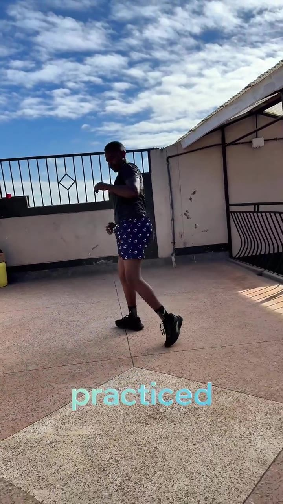
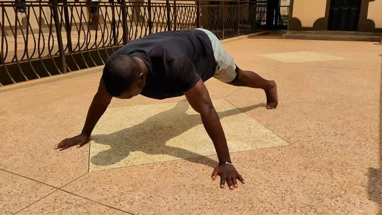
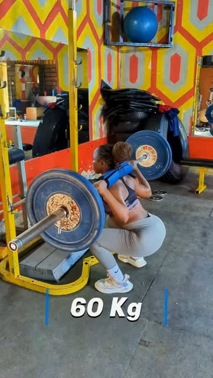
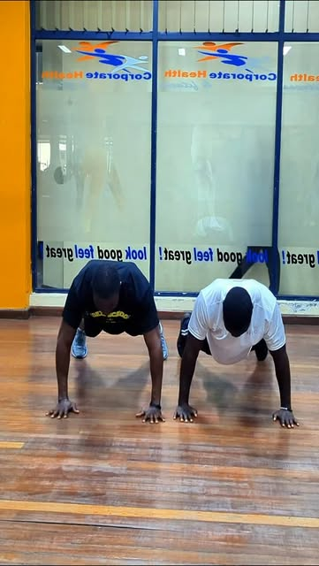
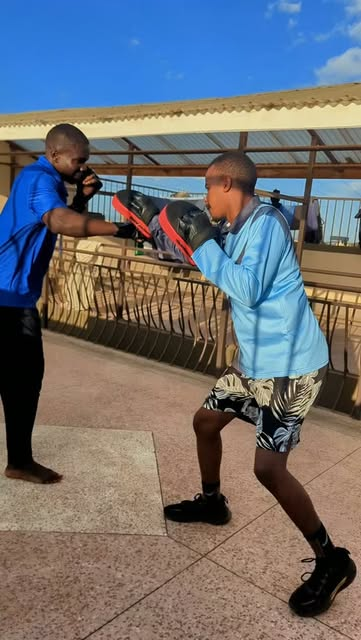
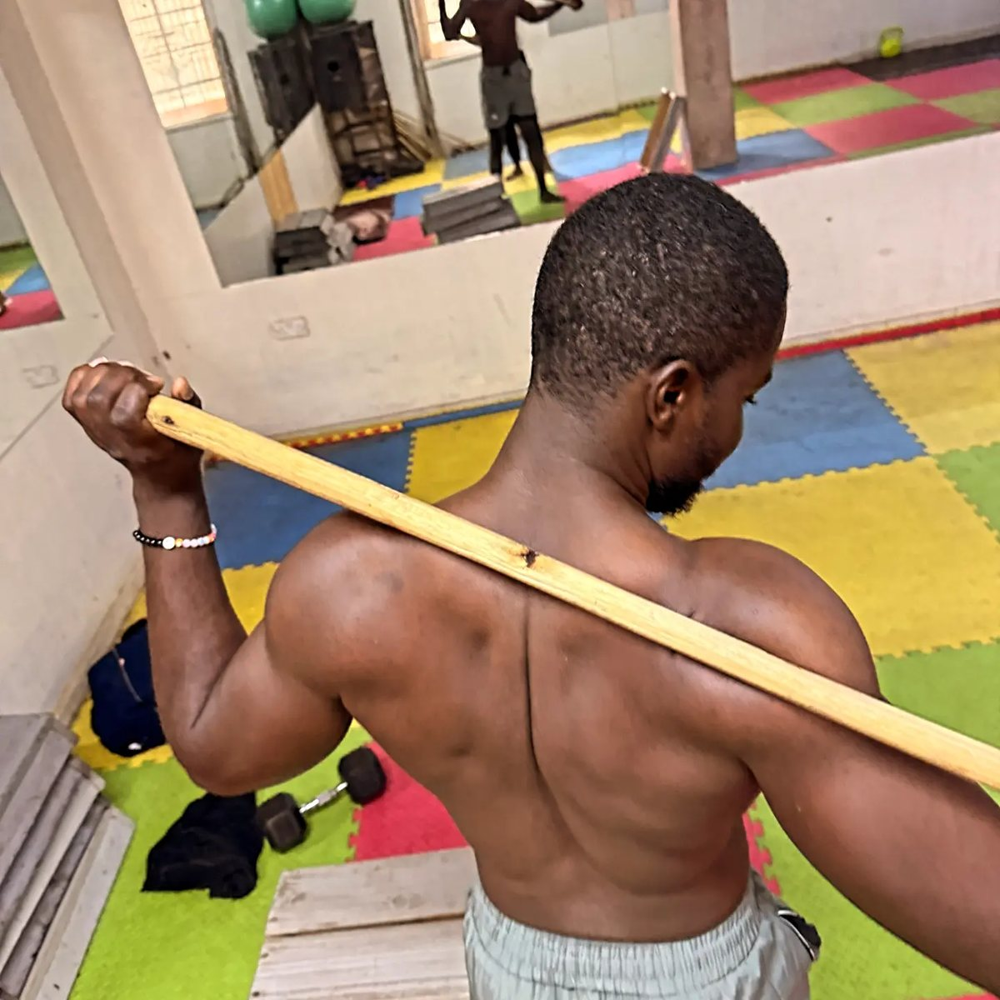
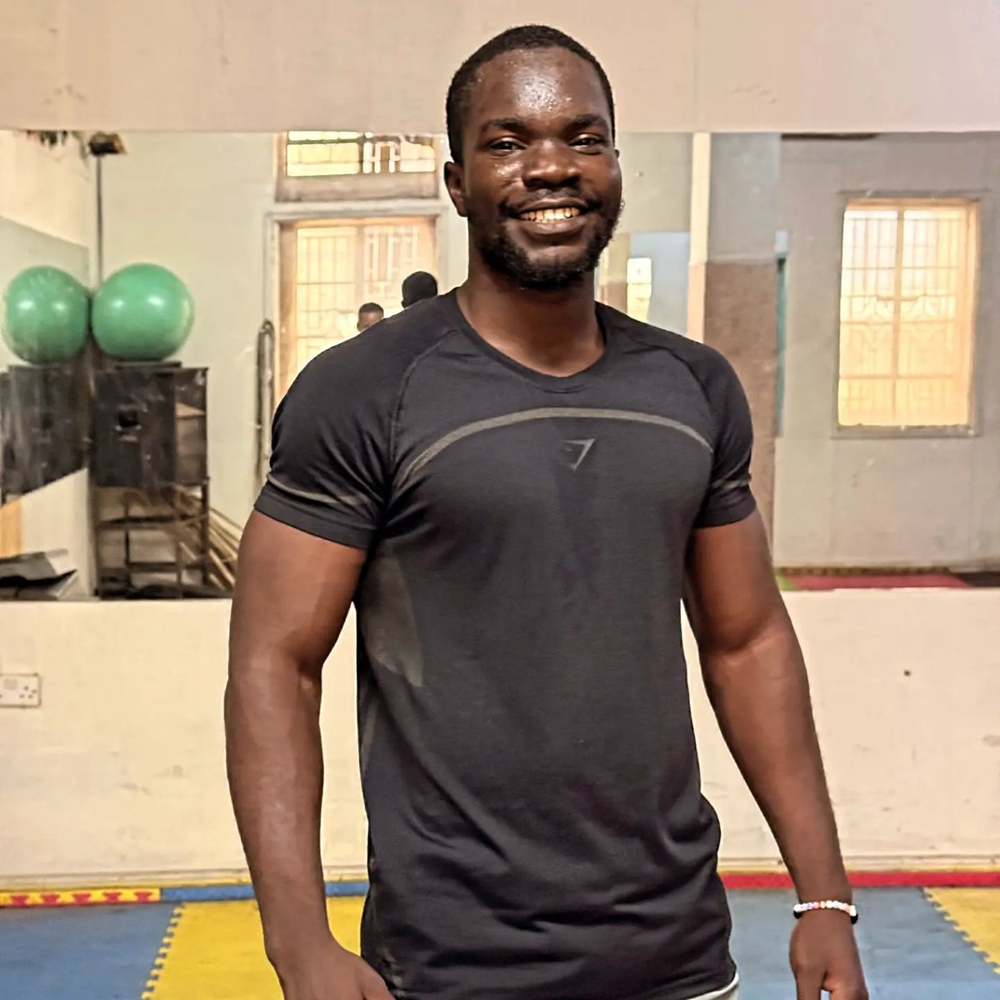

Certified Fitness & Performance Coach · Nairobi
Personal Trainer in Nairobi
Personal training, fitness, MMA, aerobics and martial arts with Coach Don Michael Ondiro. One coach, a plan built for you, and sessions that move you forward every week.
- 12 training categories
- 6 Nairobi areas
- JKD & MMA trained
Training Categories
Fitness, MMA, Aerobics & More in Nairobi
Pick a goal. Each one has its own plan and videos.
 One-on-One Personal TrainingPrivate sessions built around your goal, whether that is fat loss, muscle, strength or simply feeling fit again.View Personal Training →
One-on-One Personal TrainingPrivate sessions built around your goal, whether that is fat loss, muscle, strength or simply feeling fit again.View Personal Training →
 Fitness & Weight TrainingGet fitter and stronger with free weights, machines and structured programmes for muscle and strength.View Fitness Training →
Fitness & Weight TrainingGet fitter and stronger with free weights, machines and structured programmes for muscle and strength.View Fitness Training →
 MMA TrainingMixed martial arts fitness: striking, kicks, clinch basics and fight conditioning, for beginners and enthusiasts.View MMA Training →
MMA TrainingMixed martial arts fitness: striking, kicks, clinch basics and fight conditioning, for beginners and enthusiasts.View MMA Training →
 Aerobics & Cardio Fitness ClassesHigh-energy aerobics, HIIT and cardio-boxing sessions to boost stamina, burn calories and lift your mood.View Aerobics & Cardio →
Aerobics & Cardio Fitness ClassesHigh-energy aerobics, HIIT and cardio-boxing sessions to boost stamina, burn calories and lift your mood.View Aerobics & Cardio →
 Jeet Kune Do & Martial Arts FitnessLearn Jeet Kune Do and MMA-style striking for self-defence, coordination and fight-ready conditioning.View Jeet Kune Do Training →
Jeet Kune Do & Martial Arts FitnessLearn Jeet Kune Do and MMA-style striking for self-defence, coordination and fight-ready conditioning.View Jeet Kune Do Training →

Boxing & Kickboxing FitnessHigh-energy pad work and striking drills that burn calories, relieve stress and sharpen your reflexes.View Boxing Fitness → Calisthenics & Bodyweight TrainingMaster push-ups, pull-ups, dips and advanced skills like the one-arm push-up with structured bodyweight progressions.View Calisthenics Training →
Calisthenics & Bodyweight TrainingMaster push-ups, pull-ups, dips and advanced skills like the one-arm push-up with structured bodyweight progressions.View Calisthenics Training →

Weight Loss & Fat Loss TrainingA realistic fat loss plan: coached training, daily movement and simple nutrition built around Kenyan food.View Weight Loss Training →
Strength & Performance CoachingAthlete-style strength and conditioning for sport, performance and getting strong.View Strength & Conditioning →
Group & Partner Fitness ClassesTrain with friends, family or colleagues: fun, coached small-group sessions that share the cost and the motivation.View Group Fitness →
Kids & Teens Fitness and Martial ArtsFun, safe fitness and martial arts sessions that build confidence, discipline and coordination in young people.View Kids & Teens Fitness →
Mobility & Flexibility TrainingLoosen stiff hips, shoulders and backs so you can train harder, sit better and move without pain.View Mobility Training →Watch
Coach Don in Action

Your Coach
Meet Don Michael Ondiro
Don is a certified fitness and performance coach, a Jeet Kune Do and leisure MMA martial artist, and holds a BA in Economics. His students call him Sensei.
His rule for training: repetition breeds mastery. Use your space, anywhere and anytime. You can see it on his Instagram, from one-arm push-ups to 100 push-ups a day.
- Certified fitness and performance coach
- Jeet Kune Do and MMA
- Fitness, calisthenics and conditioning
Getting Started
How Training Works
- Message usSend your goal, location and preferred times on WhatsApp.
- AssessmentYour first session checks movement, strength and fitness.
- Your planA programme built for you that progresses every week.
- Check-insTrack strength, measurements and progress as you go.
Areas We Serve
Personal Training Across Nairobi
D Dynamic Fitness trains clients across Nairobi, including:
All areas we serve →D Dynamic Fitness
Nairobi, Kenya
0703 981 450
Mon to Sat, 6:00am to 8:00pm
Frequently Asked Questions
Who is the coach at D Dynamic Fitness?
D Dynamic Fitness is run by Don Michael Ondiro, a certified fitness and performance coach in Nairobi who also trains in Jeet Kune Do and MMA. He holds a BA in Economics.
Where in Nairobi do you train clients?
D Dynamic Fitness works with clients across Nairobi, including Westlands, Kilimani, Kileleshwa, Lavington, Karen and Parklands. Message on WhatsApp with your location to confirm.
What services do you offer?
One-on-one personal training, fitness and weight training, MMA training, aerobics and cardio classes, Jeet Kune Do, boxing and kickboxing fitness, calisthenics, weight loss coaching, strength and conditioning, group and partner classes, kids and teens fitness, and mobility training.
I'm a complete beginner. Is that okay?
Yes. Every programme starts with an assessment and is built from your current fitness level. Beginners are very welcome.
How do I book a session?
Tap the WhatsApp or Call button on any page, or use the contact form. Tell us your goal, location and preferred times, and we will reply to arrange your first session.